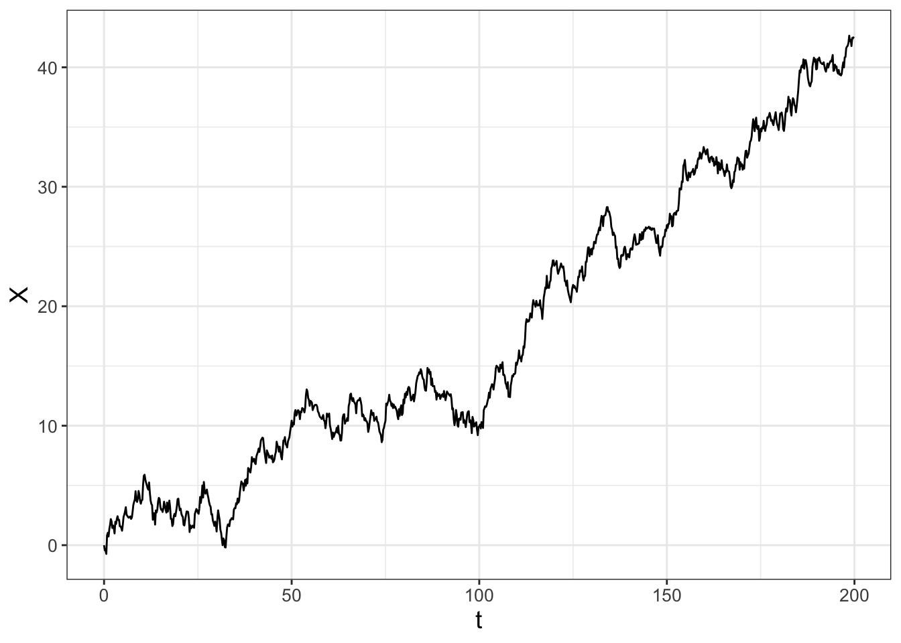
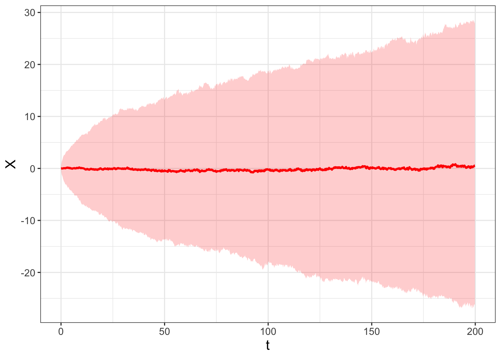
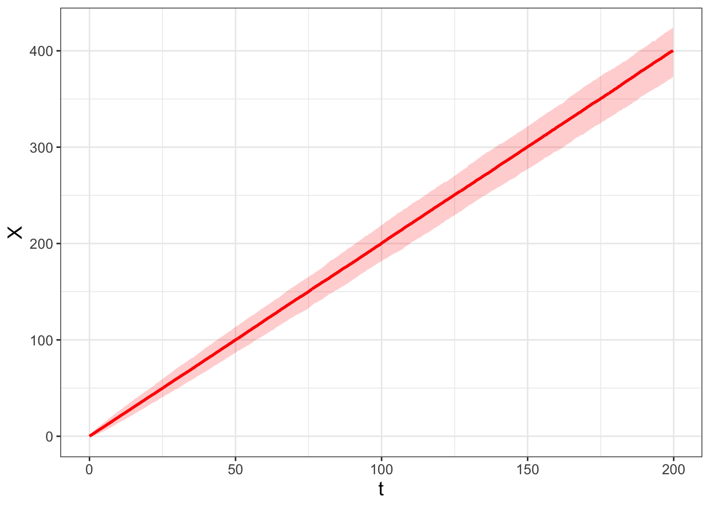
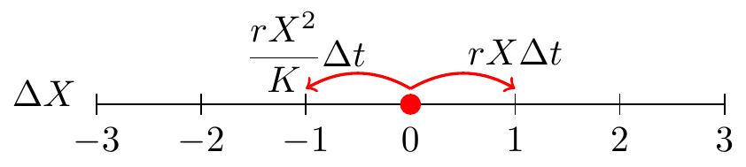
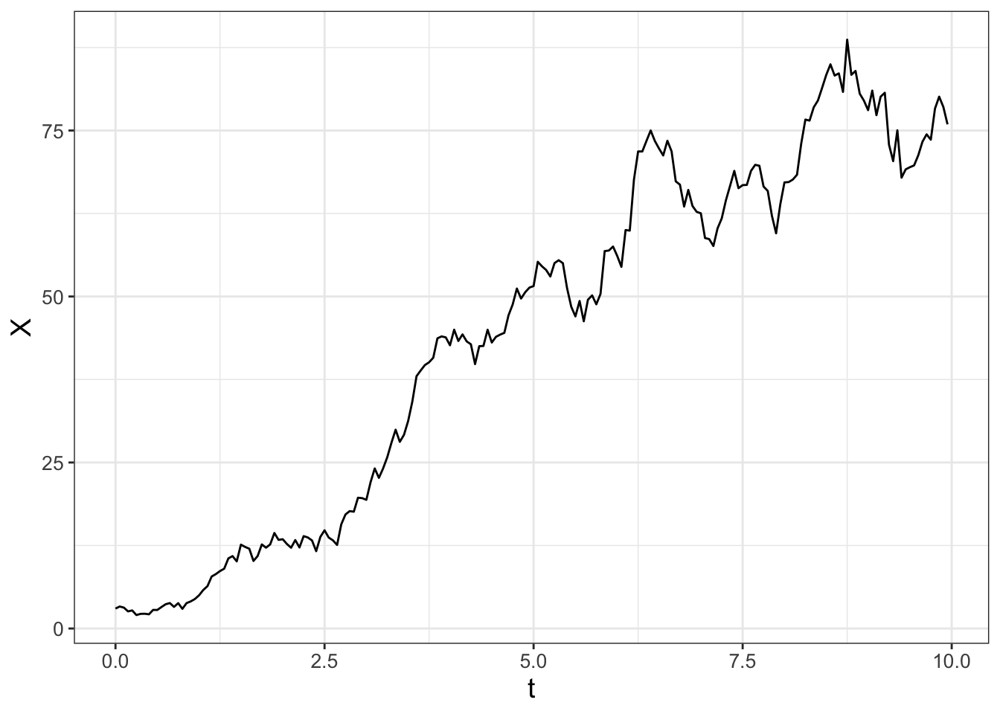
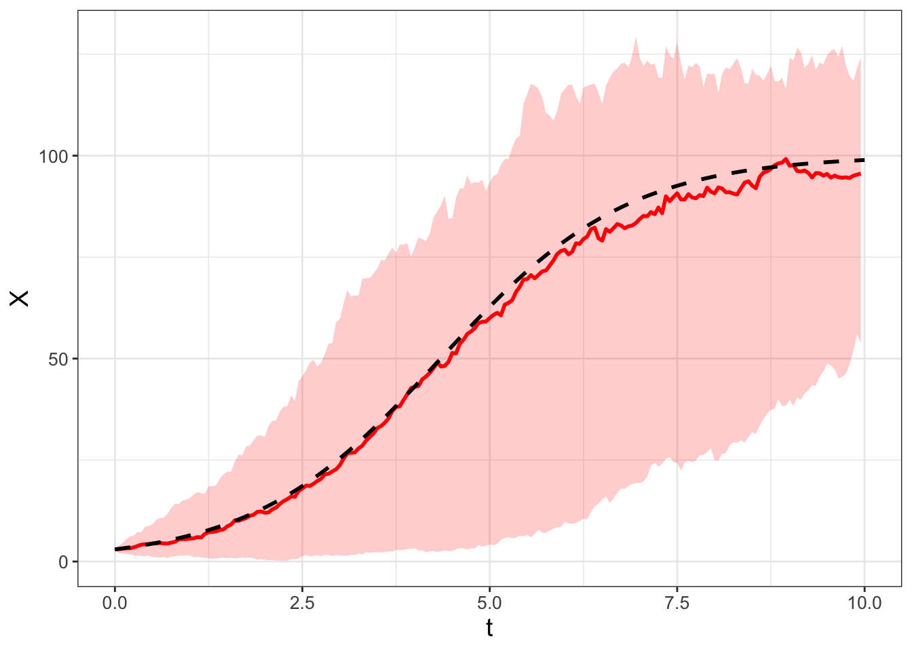

sde <- function(number_steps, dt) {
x0 <- 0 # The initial condition
# Set up vector of results
x <- array(x0, dim = number_steps)
# Iterate through this random process.
for (i in 2:number_steps) {
x[i] <- x[i - 1] + rnorm(1) * sqrt(dt)
}
# Create the time vector
t <- seq(0, length.out = number_steps, by = dt)
out_x <- tibble(t, x)
return(out_x)
}
out <- sde(1000, .2)
ggplot(data = out) +
geom_line(aes(x = t, y = x))26 Statistics of a Stochastic Differential Equation
In Chapter 25 you explored ways to incorporate stochastic processes into a differential equation. The workflow (Do once \(\rightarrow\) Do several times \(\rightarrow\) Summarize \(\rightarrow\) Visualize) generated ensemble averages of several different realizations of a stochastic process, which allowed you to visually characterize the solution.
The ensemble average indicates that the solution to a stochastic process is a probability distribution (similar to what we studied in Chapter 9). More importantly, this probability distribution may evolve and change in time. This chapter examines how this distribution changes in time by computing statistics from these stochastic processes. Additionally we will also investigate stochastic processes with tools from Markov modeling (such as the random walk mathematics from Chapter 23. Let’s get started!
Note
This chapter uses following libraries: ggplot2, purrr, and dplyr (all part of the tidyverse) and data tables from demodelr. See Section 2.3 on how to install packages. Prior to running any code in this section, include library(tidyverse) and library(demodelr).
26.1 Expected value of a stochastic process
Chapter 25 introduced a general form of a stochastic differential equation for a single variable \(X\):
\[ dX = a(X,t) \; dt + b(X,t) \, dW(t) \tag{26.1}\]
We will now look at a few idealized examples of Equation 26.1 to understand the behavior of simulated solutions.
26.1.1 A purely stochastic process
The first example is when \(a(X,t)=0\) and \(b(X,t)=1\) (a constant) in Equation 26.1, so \(\displaystyle dX = dW(t)\). We call this example a purely stochastic process. Let’s code this up using the function sde to examine one realization (Figure 26.1) with \(\Delta t =0.2\) and \(X(0)=0\).

Let’s highlight two parts from the function sde:
- Notice the line
x[i] <- x[i-1] + rnorm(1)*sqrt(dt)where we iterate through the random process with the term \(\sqrt{dt}\), similar to what we did in Chapter 25. - To produce the correct time intervals in Figure 26.1 we defined a time vector:
t <- seq(0,length.out=number_steps,by=dt).
When we repeat this process several times and plot of the results, we have the following ensemble average in Figure 26.2:
# Many solutions
n_sims <- 1000 # The number of simulations
# Compute solutions
sde_run <- map(1:n_sims, ~ list()) |>
set_names(paste0("sim", 1:n_sims)) |>
map(~ sde(1000, .2)) |>
map_dfr(~.x, .id = "simulation")
# Compute Quantiles and summarize
quantile_vals <- c(0.025, 0.5, 0.975)
# Summarize the variables
summarized_sde <- sde_run |>
group_by(t) |>
summarize(
q_val = quantile(x, # x is the column to compute the quantiles
probs = quantile_vals,
na.rm = TRUE # remove NA values
),
q_name = quantile_vals
) |>
pivot_wider(
names_from = "q_name", values_from = "q_val",
names_glue = "q{q_name}"
)
# Make the plot
ggplot(data = summarized_sde) +
geom_line(aes(x = t, y = q0.5)) +
geom_ribbon(aes(x = t, ymin = q0.025, ymax = q0.975), alpha = 0.2)
I sure hope (again!) the results are very similar to ones generated in Chapters 23 and 24 (especially Figures 23.4 and 24.4) - this is no coincidence! Figure 24.4 is another simulation of Brownian motion with \(D = 1/2\).
26.1.2 Stochastics with drift
The second example is a modification where \(a(X,t)=2\) and \(b(X,t)=1\) in Equation 26.1, yielding \(\displaystyle dX = 2 \; dt + dW(t)\). To simulate this stochastic process you can easily modify this approach by modifying the function sde, which I will call sde_v2. The code to simulate the stochastic process and visualize the ensemble average (Figure 26.3) is shown below:
sde_v2 <- function(number_steps, dt) {
a <- 2
b <- 1 # The value of b
x0 <- 0 # The initial condition
### Set up vector of results
x <- array(x0, dim = number_steps)
for (i in 2:number_steps) {
x[i] <- x[i - 1] + a * dt + b * rnorm(1) * sqrt(dt)
}
# Create the time vectror
t <- seq(0, length.out = number_steps, by = dt)
out_x <- tibble(t, x)
return(out_x)
}
# Many solutions
n_sims <- 1000 # The number of simulations
# Compute solutions
sde_v2_run <- map(1:n_sims, ~ list()) |>
set_names(paste0("sim", 1:n_sims)) |>
map(~ sde_v2(1000, .2)) |>
map_dfr(~.x, .id = "simulation")
# Compute Quantiles and summarize
quantile_vals <- c(0.025, 0.5, 0.975)
### Summarize the variables
summarized_sde_v2 <- sde_v2_run |>
group_by(t) |>
summarize(
q_val = quantile(x, # x is the column to compute the quantiles
probs = quantile_vals,
na.rm = TRUE # Remove NA values
),
q_name = quantile_vals
) |>
pivot_wider(
names_from = "q_name", values_from = "q_val",
names_glue = "q{q_name}"
)
### Make the plot
ggplot(data = summarized_sde_v2) +
geom_line(aes(x = t, y = q0.5)) +
geom_ribbon(aes(x = t, ymin = q0.025, ymax = q0.975), alpha = 0.2)
In Figure 26.3, the median seems to follow a straight line. Approximating the final position of the median at \(t=200\) and \(X=400\), the slope of this line \(\displaystyle \frac{\Delta X}{\Delta t} \approx \frac{400}{200} = 2\). So we could say that the median of this distribution follows the line \(X=2t\). I recognize the ensemble average computes the median which is not the average. Because we are simulating this process with random variables drawn from a normal distribution we assume the median approximates the average.
Let’s generalize the lessons learned from these examples. The solution to the SDE \(\displaystyle dX = a(X,t) \; dt + b(X,t) \, dW(t)\) is probability distribution \(p(X,t)\). The expected value, \(\mu\), is denoted as \(E[p(X,t)]\). The solution to the differential equation \(\displaystyle dX = a(X,t) \; dt\) equals the expected value \(\mu\). This result should make some intuitive sense: stochastic differential equations should - on the average - converge to the deterministic solution.
The variance is a little harder to compute as the definition of the variance of a random variable \(Y\) is \(\displaystyle \sigma^{2} = E[(Y - \mu)^{2}] = \sigma^{2}= E[Y^{2}] - (E[Y] )^{2}\). However, what we can say is that the variance should be proportional (in some way) to \(b(X,t) \; dt\). In both our cases studied here \(b(X,t)=1\), so we can infer that the variance grows in time.
26.2 Birth-death processes
In Chapter 21 we examined a model of moose population dynamics with stochastic population fluctuations. In many biological contexts this makes sense: rarely do biological processes follow a deterministic curve. On the other hand, models usually start with a differential equation. What are we to do?
To reconcile this, another way to generate a stochastic process is through consideration of the differential equation itself. Let’s go back to the logistic population model but re-written in a specific way (Equation 26.2).
\[ \frac{dx}{dt} = r x \left( 1 - \frac{x}{K} \right) = r x - \frac{rx^{2}}{K} \tag{26.2}\]
From Equation 26.2, we can obtain a change in the variable \(x\) (denoted as \(\Delta x\)) over \(\Delta t\) units by re-writing the differential equation in differential form:
\[ \Delta x = r x \Delta t - \frac{rx^{2}}{K} \Delta t \tag{26.3}\]
Equation 26.3 is separated into two terms - one that increases the variable \(x\) (represented by \(r x \Delta t\), the same units as \(x\)) and one that decreases the variable (represented by \(\displaystyle \frac{rx^{2}}{K} \Delta t\), the same units as \(x\)). We will consider these changes in \(x\) with the associated Markov random variable \(\Delta X\) organized in Table 26.1. (It is okay and understandable if you envison \(\Delta x\) and \(\Delta X\) as conceptually similar.)
| Outcome | Probability |
|---|---|
| \(\Delta X = 1\) (population change by 1) | \(r X \; \Delta t\) |
| \(\Delta X = -1\) (population change by \(-1\)) | \(\displaystyle \frac{rX^{2}}{K} \; \Delta t\) |
| \(\Delta X = 0\) (no population change) | \(\displaystyle 1 - rX \; \Delta t - \frac{rX^{2}}{K} \; \Delta t\) |
It also may be helpful to think of these changes on the following number line (Figure 26.4), similar to how we examined the random walk number line (or Markov process) from Chapter 23.

It may seem odd to think of the different outcomes (\(\Delta X\) equals 1, \(-1\), or 1) as probabilities. Assuming that the time interval \(\Delta t\) is small enough, this won’t be a numerical difficulty. Let’s compute \(E[\Delta X]\) and the variance \(\sigma^{2}\) as we did in Chapter 23. The computation of \(\mu\) is shown in Equation 26.4.
\[ \begin{split} \mu = E[\Delta X] &= (1) \cdot \mbox{Pr}(\Delta X = 1) + (- 1) \cdot \mbox{Pr}(\Delta X = -1) + (0) \cdot \mbox{Pr}(\Delta X = 0) \\ &= (1) \cdot \left( r X \; \Delta t \right) + (-1) \frac{rX^{2}}{K} \; \Delta t \\ &= r X \; \Delta t - \frac{rX^{2}}{K} \; \Delta t \end{split} \tag{26.4}\]
Observe that the right hand side of Equation 26.4 is similar to the right hand side of the original differential equation (Equation 26.3))!
Next let’s also calculate the variance of \(\Delta X\) (Equation 26.5).
\[ \begin{split} \sigma^{2} &= E[(\Delta X)^{2}] - (E[\Delta X] )^{2} \\ &= (1)^{2} \cdot \mbox{Pr}(\Delta X = 1) + (- 1)^{2} \cdot \mbox{Pr}(\Delta X = -1) + (0)^{2} \cdot \mbox{Pr}(\Delta X = 0) - (E[\Delta X] )^{2} \\ &= (1) \cdot \left( r X \; \Delta t \right) + (1) \frac{rX^{2}}{K} \; \Delta t - \left( r X \; \Delta t - \frac{rX^{2}}{K} \; \Delta t \right)^{2} \end{split} \tag{26.5}\]
Notice the term \(\displaystyle \left( r X \; \Delta t - \frac{rX^{2}}{K} \; \Delta t \right)^{2}\) in Equation 26.5. While this may seem complicated, we are going to simplify things by only computing the variance to the first order in \(\Delta t\). Because of that, we are going to assume that in \(\sigma^{2}\) any terms involving \((\Delta t)^{2}\) are small, or in effect negligible. While this is a huge simplifying assumption for the variance, it is useful!
The combination of the mean (Equation 26.4) and variance (Equation 26.5) yields the stochastic process in Equation 26.6.
\[ \begin{split} dX &= \mu + \sigma \; dW(t) \\ &= \left( r X - \frac{rX^{2}}{K} \right) \; dt + \sqrt{\left( r X + \frac{rX^{2}}{K} \right)} \; dW(t) \end{split} \tag{26.6}\]
To simulate this stochastic process we will modify euler_stochastic from Chapter 25, appending _log to denote “logistic” for each of the parts and applying the workflow (Do once \(\rightarrow\) Do several times \(\rightarrow\) Summarize \(\rightarrow\) Visualize). One realization of this stochastic process is shown in Figure 26.5.
# Identify the birth and death parts of the DE:
deterministic_rate_log <- c(dx ~ r * x - r * x^2 / K)
stochastic_rate_log <- c(dx ~ sqrt(r * x + r * x^2 / K))
# Identify the initial condition and any parameters
init_log <- c(x = 3)
parameters_log <- c(r = 0.8, K = 100)
# Identify how long we run the simulation
deltaT_log <- .05 # timestep length
time_steps_log <- 200 # must be a number greater than 1
# Identify the diffusion coefficient
D_log <- 1
# Do one simulation of this differential equation
out_log <- euler_stochastic(
deterministic_rate = deterministic_rate_log,
stochastic_rate = stochastic_rate_log,
initial_condition = init_log,
parameters = parameters_log,
deltaT = deltaT_log,
n_steps = time_steps_log,
D = D_log
)
# Plot out the solution
ggplot(data = out_log) +
geom_line(aes(x = t, y = x))
The following code will produce a spaghetti plot from 100 different simulations. Try this code out on your own.
# Many solutions
n_sims <- 100 # The number of simulations
# Compute solutions
logistic_sim_r <- map(1:n_sims, ~ list()) |>
set_names(paste0("sim", 1:n_sims)) |>
map(~ euler_stochastic(
deterministic_rate = deterministic_rate_log,
stochastic_rate = stochastic_rate_log,
initial_condition = init_log,
parameters = parameters_log,
deltaT = deltaT_log,
n_steps = time_steps_log,
D = D_log
)) |>
map_dfr(~.x, .id = "simulation")
# Plot these all together
ggplot(data = logistic_sim_r) +
geom_line(aes(x = t, y = x, color = simulation)) +
guides(color = "none")Finally, Figure 26.6 displays the ensemble average plot from all the simulations. Figure 26.6 also includes the solution to the the logistic differential equation for comparison.
# Compute Quantiles and summarize
quantile_vals <- c(0.025, 0.5, 0.975)
# Summarize the variables
summarized_logistic <- logistic_sim_r |>
group_by(t) |>
summarize(
q_val = quantile(x, # x is the column to compute the quantiles
probs = quantile_vals,
na.rm = TRUE
),
q_name = quantile_vals
) |>
pivot_wider(
names_from = "q_name", values_from = "q_val",
names_glue = "q{q_name}"
)
logistic_solution <- tibble(
t = seq(0, 10, length.out = 100),
x = 100 / (1 + 97 / 3 * exp(-0.8 * t))
)
# Make the plot
ggplot(data = summarized_logistic) +
geom_line(aes(x = t, y = q0.5),
color = "red", linewidth = 1) +
geom_ribbon(aes(x = t, ymin = q0.025, ymax = q0.975),
alpha = 0.2, fill = "red") +
geom_line(data = logistic_solution, aes(x = t, y = x),
linewidth = 1, linetype = "dashed")
Awesome! Notice how the median in the ensemble average plot in Figure 26.6 closely tracks the deterministic solution.
The types of stochastic processes we are describing in this chapter are called “birth-death” processes. Here is another way to think about Equation 26.3:
\[ \begin{split} r x \; \Delta t &= \alpha(x) \\ \frac{rx^{2}}{K} \; \Delta t &= \delta(x) \end{split} \tag{26.7}\]
In this way, we think of \(\alpha(x)\) in Equation 26.7 as a “birth process” and \(\delta(x)\) as a “death process”. When we computed the mean \(\mu\) and variance \(\sigma^{2}\) for Equation 26.3 we had the mean \(\mu = \alpha(x)-\delta(x)\) and variance \(\sigma^{2}=\alpha(x)+\delta(x)\). (You should double check to make sure this is the case!). Here is an interesting fact: \(\mu = \alpha(x)-\delta(x)\) and \(\sigma^{2}=\alpha(x)+\delta(x)\) hold up for any differential equation where we have identified a birth (\(\alpha(x)\)) or death (\(\delta(x)\)) process.
Generalizing birth-death processes for a system of differential equations is a little more involved as there are more possibilities involved when computing \(\mu\) and \(\sigma\). We don’t tackle this complexity here, but some considerations are thinking through all possible combinations of increase or decrease in the variables. For example, one variable could increase where the other decreases, both could increase, or one variable decreases and the other remains the same. In addition, the standard deviation is computed by the square root of the variance, and for a linear system of equations the matrix square root involves matrix decompositions. If you are curious to know more, see Logan and Wolesensky (2009) for more information on implementing birth-death processes for a system of differential equations.
26.3 Wrapping up
In the exercises for this chapter you will solve problems involving applications of stochastic processes in biological contexts. The nice part is that the framework presented here generalizes to several other contexts where a stochastic process can be identified. This chapter contained several key points about statistics for the SDE \(dX = a(X,t) \; dt + b(X,t) \; dW(t)\) and its solution \(p(X,t)\), summarized below:
- The solution of the deterministic equation \(dX = a(X,t) \; dt\) equals \(E[p(X,t)]\). The variance is proportional (but not equal) to the solution of \(dX = b(X,t) \; dt\).
- The SDE can be simulated by Brownian motion, so \(dX \approx \Delta X = a(X,t) \; \Delta t + b(X,t)\; \sqrt{2D \, \Delta t} \, Z\), where \(Z\) is a random variable from a unit normal distribution (so in
Rwe would usernorm(1)). - Since \(\Delta x = x_{n+1}-x_{n}\), then we have \(x_{n+1} = x_{n} + \mu + a(X,t) \; \Delta t + b(X,t)\; \sqrt{2D \, \Delta t} \, Z\) (the Euler-Maruyama method).
- Several realizations of the SDE and subsequent computation of the ensemble average approximately characterize the distribution \(p(X,t)\).
Chapter 27 will revisit some of the examples studied in this chapter, but apply tools to further characterize the distribution \(p(X,t)\) with partial differential equations. There are still more mathematics to investigate, so onward!
26.4 Exercises
Exercise 26.1 Simulate the stochastic process \(dX = -0.2 \; dW(t)\) with the following values:
- \(D = 1\)
- \(\Delta t= 0.05\)
- Timesteps: 200
- Initial condition: \(X(0)=1\).
- Set the number of simulations to be 100.
Generate a spaghetti plot and ensemble average of your simluation results.
Exercise 26.2 Simulate the stochastic process \(dX = 2 \; dW(t)\) with the following values:
- \(D = 1\)
- \(\Delta t= 0.05\)
- Timesteps: 200
- Initial condition: \(X(0)=1\).
- Set the number of simulations to be 100.
Generate a spaghetti plot and ensemble average of your simluation results.
Exercise 26.3 An alternative formulation of the function sde can also be implemented using the function cumsum, or cumulative summation:
he function brownian_motion can also be implemented using the function cumsum, or cumulative summation:
sde_alt = function(number_steps, dt, x0 = 0) {
# number_steps: length of sde
# dt: timestep length
# x0: initial condition
# Set up vector of results
x <- rnorm(number_steps) * sqrt(dt)
# Results:
x[1] <- x0 # Set the first step as the initial condition
x <- cumsum(x) # Add up the results
# Create the time vector
t <- seq(0, length.out = number_steps, by = dt)
out_x <- tibble(t, x)
return(out_x)
}Evaluate sde_alt to recreate Figure 26.1.
Exercise 26.4 Return to the simulation of the logistic differential equation in this chapter. To generate Figure 26.6 we set \(D = 1\). What happens to the resulting ensemble average plots when \(D =0, \; 0.01, \; 0.1, \; 1, \; 10\)? You may use the following values:
- Set the number of simulations to be 100.
- Initial condition: \(x(0)=3\)
- Parameters: \(r=0.8\), \(K=100\).
- \(\Delta t = 0.05\) for 200 time steps.
Exercise 26.5 For the logistic differential equation consider the following splitting of \(\alpha(x)\) and \(\delta(x)\) as a birth-death process:
\[ \begin{split} \alpha(x) &= rx - \frac{rx^{2}}{2K} \\ \delta(x) &= \frac{rx^{2}}{2K} \end{split} \]
Simulate this SDE with the following values:
- Initial condition: \(x(0)=3\)
- Parameters: \(r=0.8\), \(K=100\).
- \(\Delta t = 0.05\) for 200 time steps.
- \(D=1\).
Generate an ensemble average plot. How does this SDE compare to Figure 26.6?
Exercise 26.6 Let \(S(t)\) denote the cumulative snowfall at a location at time \(t\), which we will assume to be a random process. Assume that probability of the change in the cumulative amount of snow from day \(t\) to day \(t+\Delta t\) is the following:
| change | probability |
|---|---|
| \(\Delta S = \sigma\) | \(\lambda \Delta t\) |
| \(\Delta S = 0\) | \(1- \lambda \Delta t\) |
The parameter \(\lambda\) represents the frequency of snowfall and \(\sigma\) the amount of the snowfall in inches. For example, during January in Minneapolis, Minnesota, the probability \(\lambda\) of it snowing 4 inches or more is 0.016, with \(\sigma=4\). (This assumes a Poisson process with rate = 0.5/31, according to the Minnesota DNR.). The stochastic differential equation generated by this process is \(dS = \lambda \sigma \; dt + \sqrt{\lambda \sigma^{2}} \; dW(t) = .064 \; dt + .506 \; dW(t)\)$ .
- With this information, what is \(E[\Delta S]\) and the variance of \(\Delta S\)?
- Simulate and summarize this stochastic process. Use \(S(0)=0\) and run 500 simulations of this stochastic process. Simulate this process for a month, using \(\Delta t = 0.1\) for 300 timesteps and with \(D=1\). Show the resulting spaghetti plot and interpret your results.
Exercise 26.7 Consider the stochastic differential equation \(\displaystyle dS = \left( 1 - S \right) \; dt + \sigma \; dW(t)\), where \(\sigma\) controls the amount of stochastic noise. For this stochastic differential equation what is \(E[S]\) and Var\((S)\)?
Exercise 26.8 Consider the equation
\[ \Delta x = \alpha(x) \; \Delta t - \delta(x) \; \Delta t \]
If we consider \(\Delta x\) to be a random variable, show that the expected value \(\mu\) equals \(\alpha(x) \; \Delta t - \delta(x) \; \Delta t\) and the variance \(\sigma^{2}\), to first order, equals \(\alpha(x) \; \Delta t + \delta(x) \; \Delta t\).
Logan, J. David, and William Wolesensky. 2009. Mathematical Methods in Biology. 1st ed. Hoboken, N.J: Wiley.